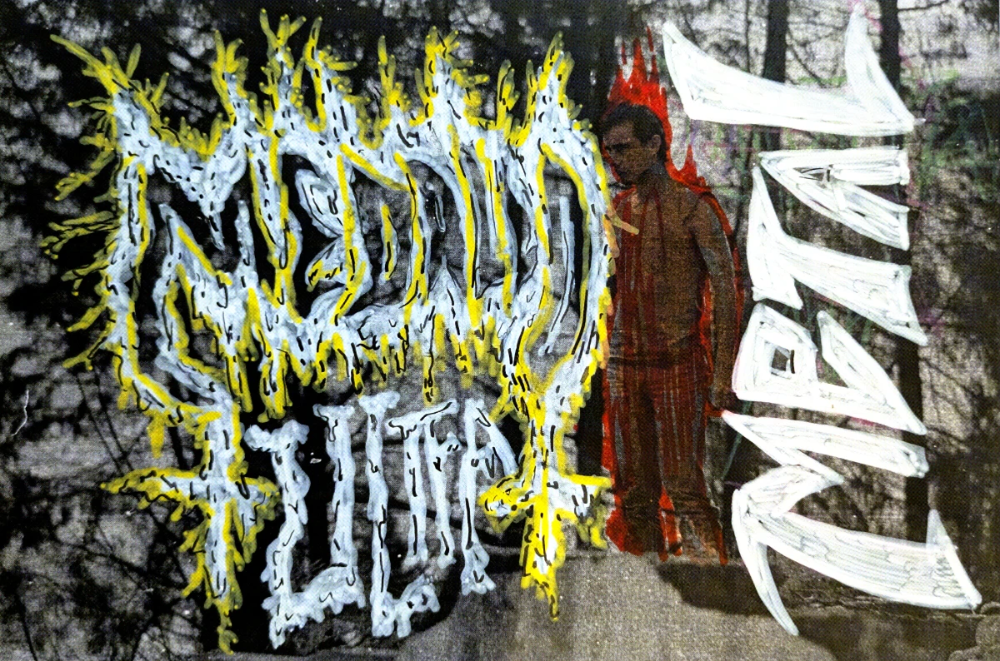
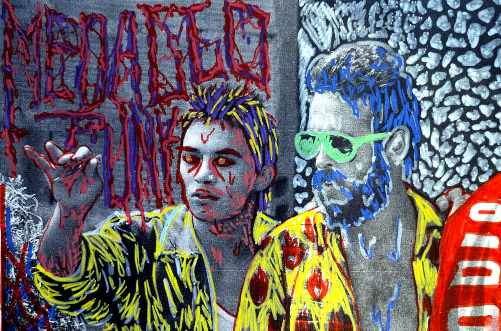
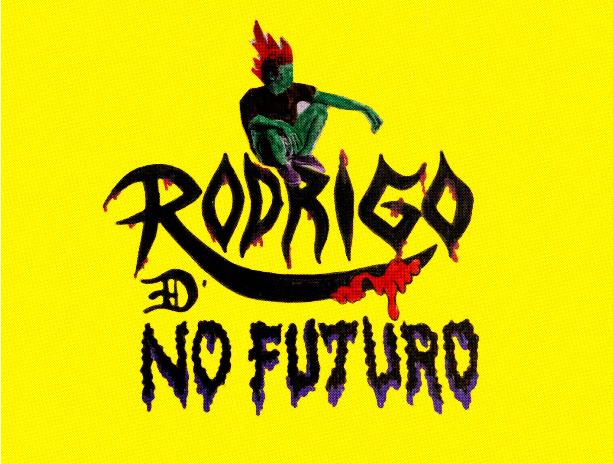
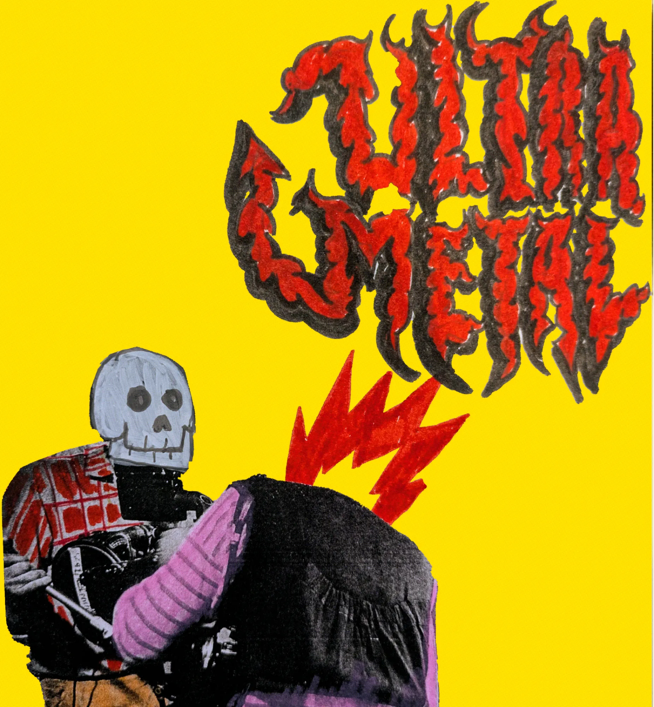
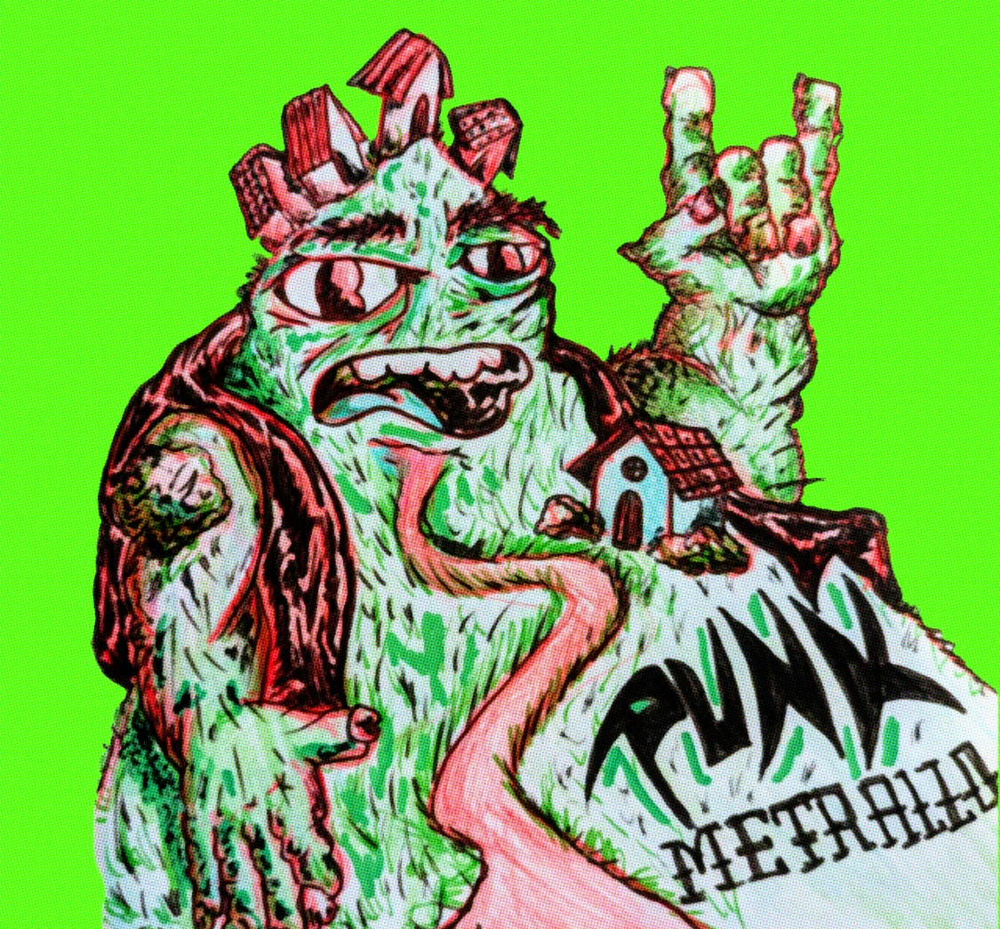

LA CIUDAD *NO* TAN PODRIDA - MIXTAPE #1 ★ 2025
LA CIUDAD *NO* TAN PODRIDA
★ MIXTAPE #1 ★
Sin Spotify
Sin algoritmos
Solo decadencia
Pura





Curado por:
Marquis Saint Cocho
Año:
2025
Hecho:
YouTube
Bandcamp
SoundCloud
Contacto:
Más Info
Medellín ciudad punk
Contra reaccionarios